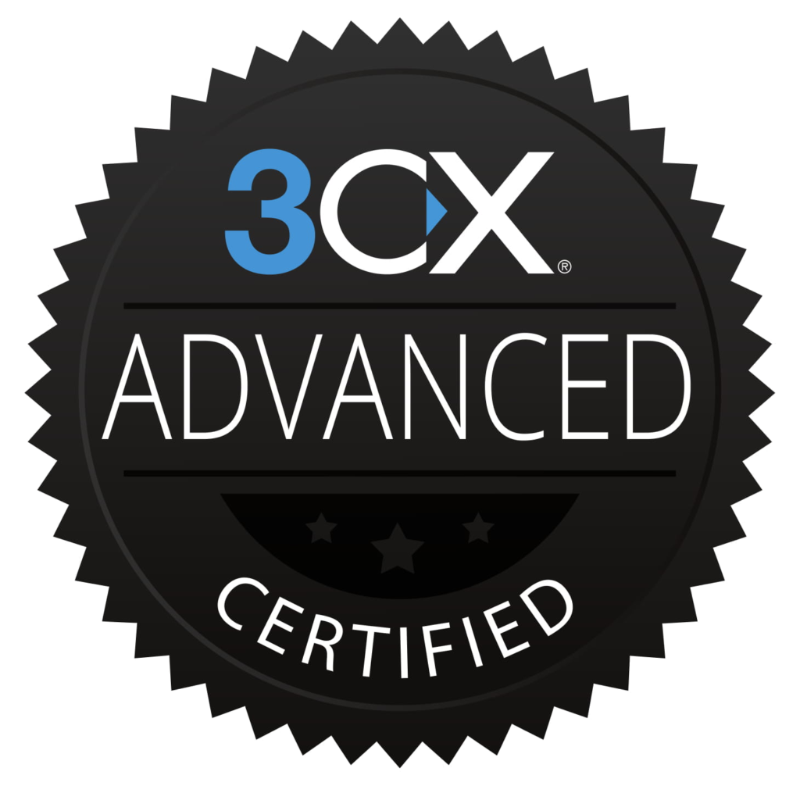

Note: Following the cyberattack on Papaki, "bandisast.eu" might be down for maintenance sometime between 2023-08-14 and 2023-08-20. Apologies for any inconvenience.
Work experience
 Intern System Administrator - Lancom
Ltd. (Nov. 2022 - May 2023)
Intern System Administrator - Lancom
Ltd. (Nov. 2022 - May 2023)
* Provisioning, managing, and maintaining several Linux, Windows, and ESXi servers and
server clusters on production and development environments
* Setting up and maintaining common services, including DNS, webservers, mailservers,
databases, monitoring, fileservers, AD/LDAP, and automated backups, both on "bare-metal" and
on Docker and Kubernetes
* Setting up and maintaining common networking configurations, such as VPNs, load balancers,
proxies, NAT, IPSec, and VoIP
* Providing managed services and technical support to clients
* Providing QA support and bug reports for the "myLancom" panel
* Writing good documentation and improving procedural efficiency
* Managing other interns
 System Administrator - Aristotle Space & Aeronautics
Team (Jan. 2021 - Sep. 2022)
System Administrator - Aristotle Space & Aeronautics
Team (Jan. 2021 - Sep. 2022)
* Maintaining the team's services with high performance and reliability (>99.85% uptime)
* Participating in the design & development of web applications suiting the team's needs
* Installing and regularly updating all of the team's SaaS utilities
* Managing and securing a number of Linux servers and computing environments, including services
such as Apache2, Nginx, MySQL, OpenLDAP
* Providing quick IT support
* Managing the team's IT department, training new members, and providing IT documentation for
future SysAdmins
In order to have a smooth handoff, my role in the team between April 2022 and September
2022 was primarily
consultative and supplemental.
Avionics Engineer - Aristotle Space & Aeronautics
Team (Nov. 2019 - Mar. 2021)
* Sensor research and programming in C++
* Sensor board design and assembly
* Autopilot system research and implementation
* Development of software computational tools
* Writing documentation on the development process and creating and maintaining a document
classification system for documentation management
 Autonomous Vehicles Engineer - AutoROS Team
(Oct. 2019 - Jul. 2020)
Autonomous Vehicles Engineer - AutoROS Team
(Oct. 2019 - Jul. 2020)
* Development of ROS-based software in C++ and Python
* Sensor research and programming
* Robot maintenance
* Creation of a ROS manual for future team members
* Creating and maintaining QoL documents for the team
Education
 Automation Engineering T.E. - IHU (Sep. 2018 - Jun.
2023)
Automation Engineering T.E. - IHU (Sep. 2018 - Jun.
2023)
Graduated as valedictorian, with the highest GPA among 63 students in the 2022-2023 academic
year.
* Applying the scientific and technological methods of design, development, construction and
operation of electrical, electronic, computer, hydraulic and pneumatic machines, as well as
their automatic control, and composing or supervising studies for projects involving the above.
* Carrying out evaluations and surveys of projects belonging to systems containing elements of
automatic control and expert opinions on installations of systems of the above.
* Using, programming, maintaining, adjusting and adapting computers, microcomputers,
microcontrollers, PLCs, CNCs, robotic devices and general equipment implementing automatic
control methods and algorithms
Thesis title: Scattering measurements with the Beaglebone microcomputer for portable biomedical
sensors
[Details]
Licences, Certifications, and Awards
3CX Advanced Certification (2023-)
* Issued by the 3CX Academy for successfully completing the Basic, Intermediate, and Advanced
3CX courses and for hosting a fully functional 3CX call centre
 YMCA Youth Leadership Diploma (2016-)
YMCA Youth Leadership Diploma (2016-)
* Issued by the YMCA of Thessaloniki for successfully completing a four-year training course on
leadership.
 Center for Talented Youth (Greece) Talent Search
Award (2013-)
Center for Talented Youth (Greece) Talent Search
Award (2013-)
* Issued by the Anatolia College of Thessaloniki on behalf of Johns Hopkins University's Center
for Talented Youth, for High Honours in Verbal and Quantitative Ability, and for being among the
highest scoring participants in the 2013-2015 academic years.
 Certificate of Competency in
English (ECCE) (2012-)
Certificate of Competency in
English (ECCE) (2012-)
* Issued by the University of Michigan as an official certification of knowledge of the English
language.
English is my second native language anyway, so this certificate exists primarily to avoid
bureaucratic paperwork.
Volunteering
 Local Organising Committee – 1st
Balkan Physics Olympiad (Jul. 2019)
Local Organising Committee – 1st
Balkan Physics Olympiad (Jul. 2019)
Aided the Balkan Physical Union and the Hellenic Physical Society in organising the 1st Balkan
Physics Olympiad
 Student Mediator
Student Mediator
Joined my high school's student mediation team and helped both individual students and groups of
students reconcile with each other by acting as a student mediator.
Publications
Thesis
* Scattering measurements with the Beaglebone microcomputer for portable biomedical sensors, M. Michailidou, A. Bantis (2022)
Proceedings papers
* Fabrication and Development of an Optical Biomedical Sensor, A. Bantis, M. Michailidou, E. Gkagkanis, K. Karakostas and M. E. Kiziroglou (21WOM-05)
* From Microtechnology to Nanotechnology, D. Bagdatoglou, N. Balp, A. Bantis, R. Beal, Y. Carmichael, C. I. Danaskou, K. Georgiadis, M. Michailidou, A. Nikolopoulos, S. Ntemkas, D. Parastatidou, V. Petitjean, H. Schaefer and N. Traikoudis (20WOM-04)
Languages
* Modern Greek (Native)* English (Native)
* Polish (A2)
* French (A2)
Skills
C, C++, Python, BASH, Ruby, Ansible, PHP, SQL, PLC Programming (LD, FBD, ST), BASIC, AVR Assembly, ARM Assembly, HTML/CSS, LaTeX, ROS, AutoCAD, Solidworks
GNU/Linux, Windows Server, Docker, Kubernetes, Apache2, NGINX, IIS, HAProxy, Postfix, Exim4, Dovecot, BIND9, MySQL, PostgreSQL, MS-SQL, MongoDB, ElasticSearch, ClamAV, Grafana, Prometheus, InfluxDB, Zabbix, Graylog, Active Directory, LDAP, Hyper-V, VMWare, Veeam, S3, Hosting Panels, 3CX
System Administration, Cybersecurity, Quality Assurance, Embedded Engineering, Electrical Engineering, IT Operations, Networks, Programming, Databases, DevOps, Electronics, Autonomous Vehicles, Computer-Aided Design, Automation, Control Systems, Microsystems, Project Management
Hardworking, Teamwork, Curiosity, Written Communication, Responsibility, Problem Solving, Creativity, Multitasking
Latest update: 2023-07-10